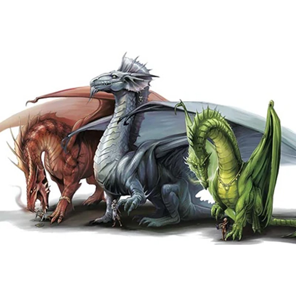

Dragons
Dragons are considered inherently magical beings and are viewed as anathema within Celestia, regardless of their alignment. Even good or neutral dragons are not accepted in Celestian society. In fact, there is a practice among skilled warriors and adventurers of hunting dragons for trophies, as killing a dragon is seen as an immense feat of strength and bravery. This has resulted in the abandonment of Celestia by metallic dragons, who have chosen to stay away from a land where they are hunted.
Chromatic dragons, on the other hand, may occasionally venture into the borders of Celestia, drawn by its riches and prosperity. However, their presence is not welcomed, and they are considered a threat to the peace and safety of the land. The people of Celestia view dragon hunting as a way to protect their land and rid it of these perceived threats, regardless of the dragon's alignment.
As a result, dragons, even those of good or neutral alignment, are seen as dangerous and unwelcome in Celestia. The practice of hunting them for trophies has created a strained relationship between dragons and the inhabitants of Celestia. Metallic dragons have abandoned the land altogether, while chromatic dragons are viewed as threats and are dealt with accordingly by the skilled warriors and adventurers who seek to protect Celestia from their perceived dangers.
